Mathematical summary of the core signal-processing model used across pvx. Equations are rendered with MathJax when this page is opened in a normal browser.
GitHub usually displays HTML source text. For GitHub-native math rendering, use
docs/MATHEMATICAL_FOUNDATIONS.md.
STFT Analysis and Synthesis
Analysis:
$$X_t[k]=\sum_{n=0}^{N-1} x[n+tH_a]w[n]e^{-j2\pi kn/N}$$
Each frame $t$ is windowed by $w[n]$ and transformed to complex bins $k$.
Synthesis:
$$\hat{x}[n]=\frac{\sum_t \hat{x}_t[n-tH_s]w[n-tH_s]}{\sum_t w^2[n-tH_s]+\varepsilon}$$
Overlap-add with energy normalization preserves level stability.
Transform Backend Selection (--transform)
pvx lets you choose the per-frame transform backend used in analysis/resynthesis:
fft, dft, czt, dct, dst, and hartley.
Fourier family (fft, dft):
$$X_t[k]=\sum_{n=0}^{N-1} x_t[n]e^{-j2\pi kn/N},\qquad x_t[n]=\frac{1}{N}\sum_{k=0}^{N-1}X_t[k]e^{j2\pi kn/N}$$
Chirp-Z (czt): $$X_t[k]=\sum_{n=0}^{N-1}x_t[n]A^{-n}W^{nk}$$
With pvx defaults $A=1$ and $W=e^{-j2\pi/N}$, CZT samples the DFT contour via a different numerical path.
DCT-II (dct): $$C_t[k]=\alpha_k\sum_{n=0}^{N-1}x_t[n]\cos\left(\frac{\pi}{N}(n+\tfrac{1}{2})k\right)$$
DST-II (dst): $$S_t[k]=\beta_k\sum_{n=0}^{N-1}x_t[n]\sin\left(\frac{\pi}{N}(n+\tfrac{1}{2})(k+1)\right)$$
Hartley (hartley): $$H_t[k]=\sum_{n=0}^{N-1}x_t[n]\,\mathrm{cas}\left(\frac{2\pi kn}{N}\right),\ \mathrm{cas}(\theta)=\cos\theta+\sin\theta$$
| Transform | Why use it | Tradeoffs | Example use case |
|---|---|---|---|
fft |
Fastest and most robust default; best runtime and CUDA support. | Typical STFT leakage/time-resolution tradeoffs still apply. | General production stretch/pitch workflows. |
dft |
Reference Fourier baseline for transform parity checks. | Usually slower than fft with little audible benefit. |
Verification and algorithm A/B testing. |
czt |
Alternative numerical path for awkward or prime frame sizes. | Requires SciPy; generally slower and CPU-oriented. | Edge-case frame-size validation and diagnostics. |
dct |
Real-basis energy compaction, useful for envelope-focused shaping. | No explicit complex phase bins; less transparent for strict phase coherence. | Creative timbre shaping and coefficient-domain experiments. |
dst |
Odd-symmetry real-basis alternative with distinct coloration. | Same phase limitations as DCT; artifacts are content-dependent. | Experimental percussive/spectral texture variants. |
hartley |
Real transform with Fourier-related basis for exploratory comparisons. | Different bin semantics from complex STFT can change artifact character. | Pedagogical and creative real-domain phase-vocoder tests. |
Sample use cases
python3 pvxvoc.py dialog.wav --transform fft --time-stretch 1.08 --transient-preserve --output-dir out
python3 pvxvoc.py tone_sweep.wav --transform dft --time-stretch 1.00 --output-dir out
python3 pvxvoc.py archival_take.wav --transform czt --n-fft 1531 --win-length 1531 --hop-size 382 --output-dir out
python3 pvxvoc.py strings.wav --transform dct --pitch-shift-cents -17 --output-dir out
python3 pvxvoc.py percussion.wav --transform dst --time-stretch 0.92 --phase-locking off --output-dir out
python3 pvxvoc.py synth_pad.wav --transform hartley --time-stretch 1.30 --output-dir outPhase-Vocoder Propagation
$$\Delta\phi_t[k]=\mathrm{princarg}\Big(\phi_t[k]-\phi_{t-1}[k]-\omega_kH_a\Big)$$
$$\hat{\omega}_t[k]=\omega_k+\frac{\Delta\phi_t[k]}{H_a}$$
$$\hat{\phi}_t[k]=\hat{\phi}_{t-1}[k]+\hat{\omega}_t[k]H_s$$
pvx uses these relationships to estimate true instantaneous frequency and re-accumulate phase under a new synthesis hop.
Pitch and Microtonal Mapping
$$r_{\text{pitch}}=2^{\Delta s/12}=2^{\Delta c/1200}$$
Semitone shift $\Delta s$ and cents shift $\Delta c$ are equivalent ratio controls. Scale-constrained retuning maps detected F0 to the nearest permitted scale target.
Dynamic Control Interpolation (--interp and --order)
For time-varying control files (comma-separated values (CSV) / JavaScript Object Notation (JSON)), pvx samples a continuous control function $u(t)$ from discrete control points.
$$u(t)=\sum_{i=0}^{d} a_i t^i,\qquad d=\min(\text{order},M-1)$$
where $M$ is the number of control points. The --order flag accepts any integer $\ge 1$.
The effective polynomial degree is capped at $M-1$.
Plot legend: blue solid line = interpolated control curve $u(t)$; red dashed line = piecewise connection of control points;
red circles labeled p_i = original control points.
Example control points used for the plots below: (0.00, 1.00), (0.16, 1.48), (0.39, 0.82), (0.63, 1.56), (0.82, 1.18), (1.00, 1.34).
| Mode | CLI | Order | Example curve |
|---|---|---|---|
none (stairstep) | --interp none | n/a | 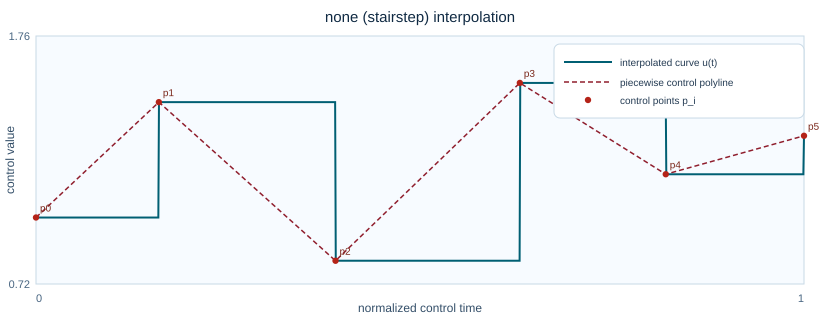 |
nearest | --interp nearest | n/a | 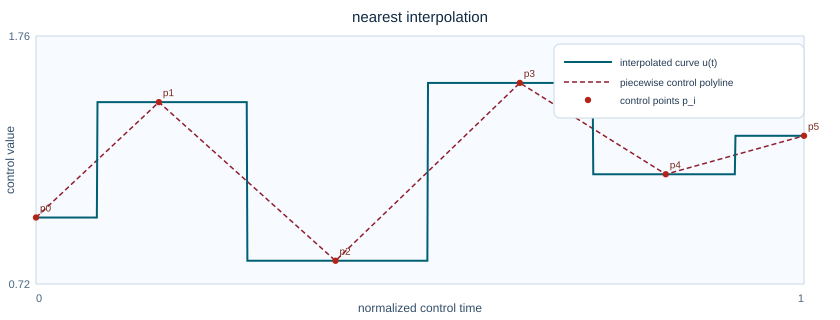 |
linear | --interp linear | n/a | 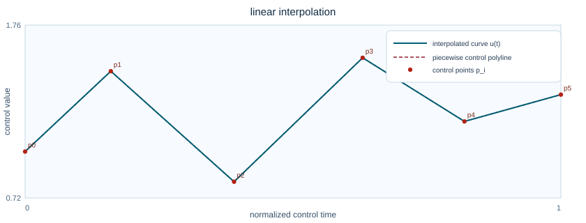 |
cubic | --interp cubic | n/a | 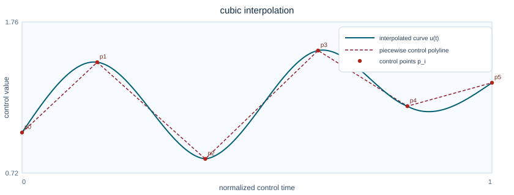 |
polynomial order 1 | --interp polynomial --order 1 | 1 | 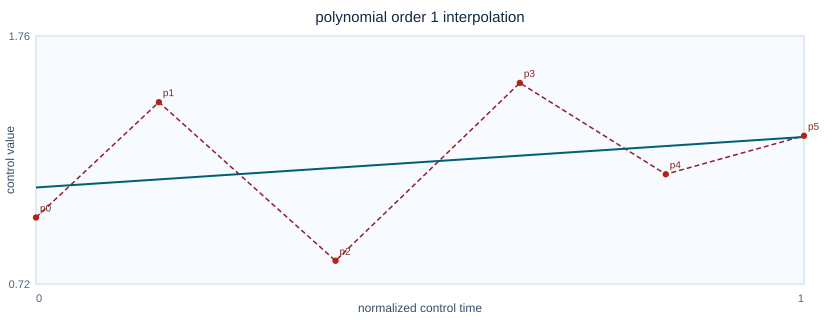 |
polynomial order 2 | --interp polynomial --order 2 | 2 | 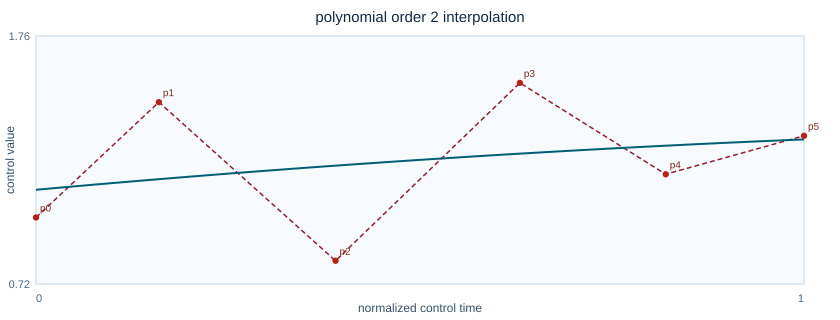 |
polynomial order 3 | --interp polynomial --order 3 | 3 | 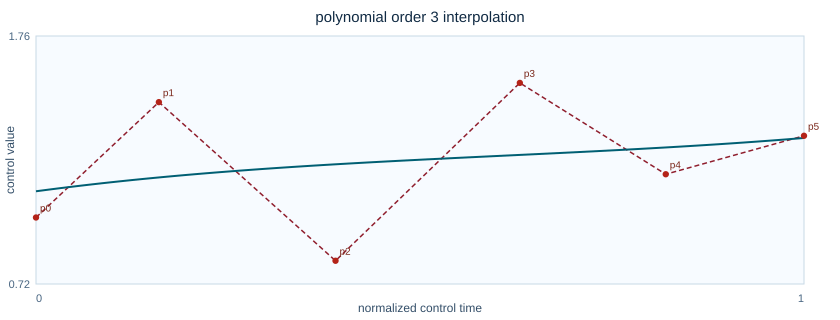 |
polynomial order 5 | --interp polynomial --order 5 | 5 | 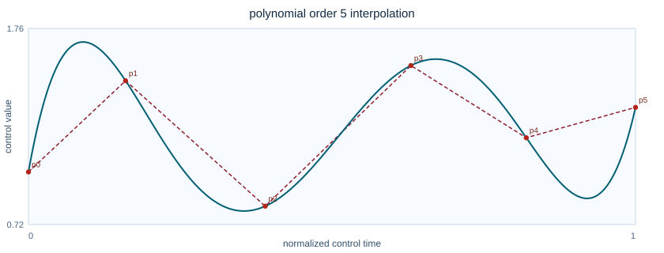 |
Function Graph Gallery (Core Processing Curves)
These charts summarize key transfer and control functions used by pvx modules, including pitch-ratio conversion, dynamics laws, soft clipping, and morph blending behavior.
| Function family | Interpretation | Graph |
|---|---|---|
| Pitch ratio from semitones | `r = 2^(semitones/12)` conversion used by pitch-shift flags. | 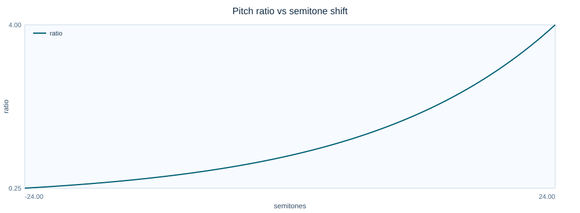 |
| Pitch ratio from cents | `r = 2^(cents/1200)` conversion for microtonal cent controls. | 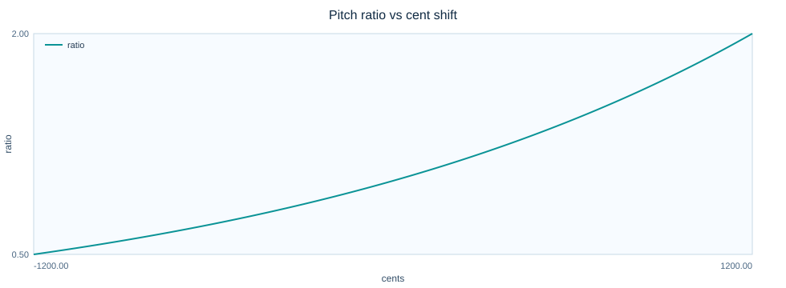 |
| Dynamics transfer functions | Compressor/expander/limiter conceptual transfer curves used in mastering stages. | 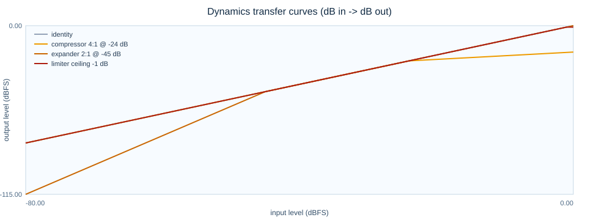 |
| Soft-clip transfer functions | Shows `tanh`, `arctan`, and `cubic` soft clipping behavior. | 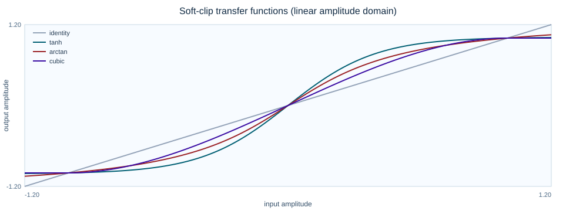 |
| Morph blend magnitude curves | Compares `linear`, `geometric`, `product`, `max_mag`, and `min_mag` blend behaviors. | 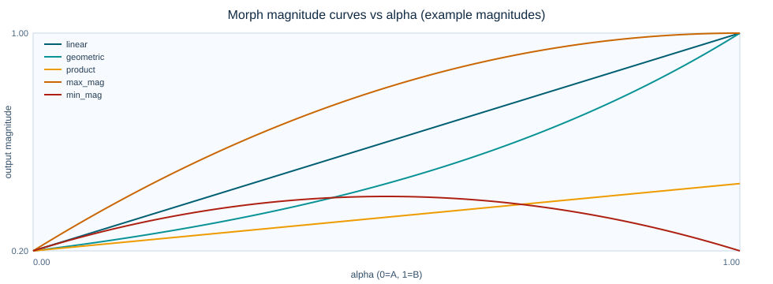 |
| Mask exponent response | Shows how `--mask-exponent` shapes cross-synthesis mask gain. | 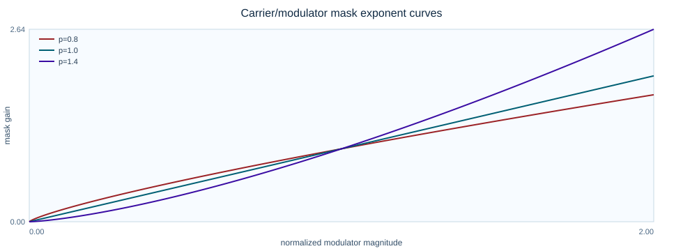 |
| Phase mix to output angle | Example of complex-vector phase blending used by morph phase mix. | 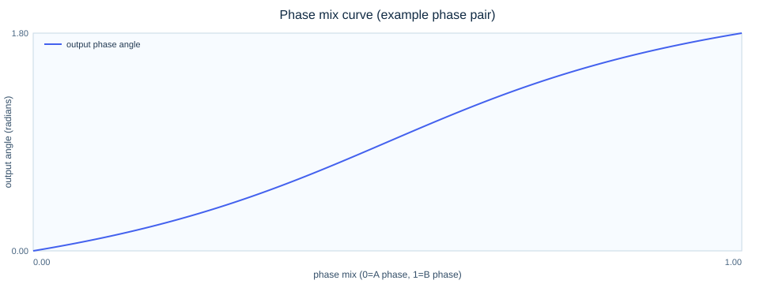 |
Dynamics and Loudness
$$g_{\text{LUFS}}=10^{(L_{\text{target}}-L_{\text{in}})/20}$$
$$y[n]=x[n]\cdot g_{\text{LUFS}}$$
Target-loudness gain is applied in linear amplitude domain after dynamics stages, before limiting/clipping safety stages.
Spatial and Multichannel Highlights
Inter-channel phase difference: $$\Delta\phi_{ij}(k,t)=\phi_i(k,t)-\phi_j(k,t)$$
Coherence-preserving objective: $$J=\sum_{k,t}\left|\Delta\phi^{out}_{ij}(k,t)-\Delta\phi^{in}_{ij}(k,t)\right|$$
Delay estimate: $$\tau^*=\arg\max_\tau\,\mathcal{F}^{-1}\left\{\frac{X_i(\omega)X_j^*(\omega)}{|X_i(\omega)X_j^*(\omega)|+\varepsilon}\right\}(\tau)$$
pvx spatial modules focus on channel coherence, stable image cues, and phase-vocoder-consistent multichannel processing for robust chain composition.